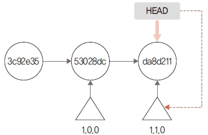
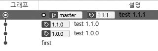

Annotated 태그는 깃에서 가장 일반적으로 사용하는 태그 방법입니다. Annotated는 ‘주석이 달린’이라는 뜻입니다.
Annotated 태그를 생성할 때는 커밋의 해시 값뿐 아니라 추가로 생성자 정보를 같이 넣을 수 있습니다. 예를 들어 이메일, 날짜, 메시지 등 정보입니다. 또 GPG 방식으로 서명도 가능합니다.
Annotated 태그를 생성하려면 tag 명령어 뒤에 -a 옵션을 사용합니다.
$ git tag -a 버전
바로 실습해 보겠습니다. version.htm 파일을 수정하고 커밋합니다.
infoh@DESKTOP MINGW64 /e/gitstudy10 (master)
$ code version.htm ☜ VS Code를 실행합니다.
version.htm
<h1>태그 버전 실습 파일입니다.</h1>
<ul>
<li>버전 1.0.0 실습</li>
</ul>
infoh@DESKTOP MINGW64 /e/gitstudy10 (master)
$ git commit -am "test 1.0.0"
[master 53028dc] test 1.0.0
1 file changed, 4 insertions(+), 1 deletion(-)
작성한 커밋에 Annotated 태그를 붙이겠습니다.
infoh@DESKTOP MINGW64 /e/gitstudy10 (master)
$ git tag -a 1.0.0 ☜ 태그 추가
Annotated 태그를 생성할 때는 태그 메시지를 작성할 수 있는 vi 에디터가 함께 실행됩니다.
그림 10-2] 태그 메시지 작성

#
# Write a message for tag:
# 1.0.0
# Lines starting with '#' will be ignored.
간략한 메시지를 작성하고 저장하면, 정상적으로 태그가 생성됩니다. 태그는 현재의 마지막 커밋을 기준으로 생성되며, 이 커밋은 HEAD 포인터와 일치합니다.
그림 10-3] 태그 생성 위치

앞에서 생성한 태그를 확인해 봅시다. 생성한 태그의 버전을 출력합니다.
infoh@DESKTOP MINGW64 /e/gitstudy10 (master)
$ git tag
1.0.0 ☜ 태그 확인
이번에는 생성된 태그를 좀 더 자세히 알아봅시다. 로그 기록을 확인합니다.
infoh@DESKTOP MINGW64 /e/gitstudy10 (master)
$ git log --decorate
commit 53028dc1486b42d23253ffd4001a758cef455372 (HEAD -> master, tag: 1.0.0) ☜ 태그 확인
Author: hojin <infohojin@gmail.com>
Date: Thu May 23 18:07:18 2019 +0900
test 1.0.0
commit 3c92e359a0039a5884fec9bb9e0535bdcd188cc4
Author: hojin <infohojin@gmail.com>
Date: Thu May 23 17:37:53 2019 +0900
first
생성된 태그가 53028d 커밋에 1.0.0으로 추가된 것을 확인할 수 있습니다. 커밋에 꼬리표처럼 연결되어 있습니다.
Annotated 태그를 생성할 때는 메시지를 작성해야 합니다. 작성할 태그 정보가 간단하다면 vi 에디터를 사용하지 않고, -m 옵션으로 대체할 수 있습니다. 커밋 명령어의 -m 옵션과 유사합니다.
이어서 실습해 보겠습니다. version.htm 파일에 한 줄을 더 추가하고 커밋합니다.
infoh@DESKTOP MINGW64 /e/gitstudy10 (master)
$ code version.htm
version.htm
<h1>태그 버전 실습 파일입니다.</h1>
<ul>
<li>버전 1.0.0 실습</li>
<li>버전 1.1.0 실습</li>
</ul>
infoh@DESKTOP MINGW64 /e/gitstudy10 (master)
$ git commit -am "test 1.1.0"
[master da8d211] test 1.1.0
1 file changed, 1 insertion(+)
추가된 커밋에 새로운 태그를 만듭시다. 이번에는 간략한 태그 메시지를 작성하려고 -m 옵션을 같이 사용합니다.
infoh@DESKTOP MINGW64 /e/gitstudy10 (master)
$ git tag -a 1.1.0 -m "simple tag 1.1.0"
정상적으로 태그가 생성되었는지 목록을 확인합니다.
infoh@DESKTOP MINGW64 /e/gitstudy10 (master)
$ git tag
1.0.0
1.1.0
태그 목록이 2개 출력됩니다. 정상적으로 태그가 추가되었네요.
그림 10-4] 두 번째 태그

소스트리에서도 태그를 작성할 수 있습니다. 실습을 위해 version.htm 파일을 수정하고 저장한 후 커밋합니다.
infoh@DESKTOP MINGW64 /e/gitstudy10 (master)
$ code version.htm
version.htm
<h1>태그 버전 실습 파일입니다.</h1>
<ul>
<li>버전 1.0.0 실습</li>
<li>버전 1.1.0 실습
<ul>
<li>수정 작업 1.1.1</li>
</ul>
</li>
</ul>
infoh@DESKTOP MINGW64 /e/gitstudy10 (master)
$ git commit -am "test 1.1.1"
[master f2691a0] test 1.1.1
1 file changed, 5 insertions(+), 1 deletion(-)
소스트리와 gitstudy10 폴더를 연결합시다. 소스트리의 새 탭에서 Add 버튼을 클릭합니다. 탐색을 눌러 앞에서 만든 gitstudy10 폴더를 찾아 선택한 후 추가를 누릅니다. 소스트리와 연결했다면 소스트리에서 로컬 저장소를 확인합니다. 왼쪽의 태그 탭에서 지금까지 생성된 전체 태그를 확인할 수 있습니다.
그림 10-5] 소스트리에서 저장소 태그 확인

새롭게 추가한 커밋을 선택합니다. 이 커밋의 메시지는 ‘test 1.1.1’입니다. 이 메시지 위에서 마우스 오른쪽 버튼을 눌러 태그 메뉴를 확인합니다. 또는 소스트리 위쪽에서 태그 10-a.jpg 버튼을 클릭해도 됩니다.
그림 10-6] 태그 생성 메뉴

태그 창이 열리면 태그 이름을 입력합니다. 책에서는 1.1.1을 입력하겠습니다. 이름을 입력한 후 태그 추가를 누릅니다.
그림 10-7] 태그 이름 입력

소스트리 그래프에 1.1.1 태그가 생성된 것을 확인할 수 있습니다.
그림 10-8] 태그 생성

깃에 등록된 태그 이름은 유일해야 합니다. 즉, 태그는 같은 이름으로 중복해서 생성할 수 없습니다. 실습으로 확인해 봅시다.
version.htm 파일을 수정하고 저장한 후 커밋합니다.
infoh@DESKTOP MINGW64 /e/gitstudy10 (master)
$ code version.htm
version.htm
<h1>태그 버전 실습 파일입니다.</h1>
<ul>
<li>버전 1.0.0 실습</li>
<li>버전 1.1.0 실습
<ul>
<li>수정 작업 1.1.1</li>
<li>수정 버전 1.1.2</li>
</ul>
</li>
</ul>
infoh@DESKTOP MINGW64 /e/gitstudy10 (master)
$ git commit -am "test 1.1.2"
[master 80f8890] test 1.1.2
1 file changed, 1 insertion(+)
지금까지 생성한 태그 목록을 확인합니다.
infoh@DESKTOP MINGW64 /e/gitstudy10 (master)
$ git tag
1.0.0
1.1.0
1.1.1
이번에는 중복된 이름으로 태그를 생성해 보겠습니다.
infoh@DESKTOP MINGW64 /e/gitstudy10 (master)
$ git tag -a 1.1.1 -m "test 1.1.1"
fatal: tag '1.1.1' already exists
이미 태그 1.1.1이 있다는 오류 메시지를 출력합니다. 깃은 안정적인 배포 환경을 위해 이처럼 중복된 태그 이름을 사용하지 못하도록 태그 목록을 검사합니다.
태그는 특정 커밋을 가리키는 꼬리표입니다. 실수로 생성할 태그의 커밋을 잘못 지정할 수도 있습니다. 이때는 기존에 생성한 태그를 삭제해야 합니다.
태그는 tag -d 명령어로 삭제할 수 있습니다.
$ git tag -d 태그이름
태그 목록에서 삭제된 태그 이름은 이후에 다시 사용할 수 있습니다.
지금까지 진행한 실습의 로그를 확인해 보겠습니다.
infoh@DESKTOP MINGW64 /e/gitstudy10 (master)
$ git log --oneline
80f8890 (HEAD -> master) test 1.1.2
f2691a0 (tag: 1.1.1) test 1.1.1
da8d211 (tag: 1.1.0) test 1.1.0
53028dc (tag: 1.0.0) test 1.0.0
3c92e35 first
커밋 f2691a0에 태그 1.1.1이 지정되어 있습니다. 태그 1.1.1을 삭제해 보겠습니다.
infoh@DESKTOP MINGW64 /e/gitstudy10 (master)
$ git tag -d 1.1.1
Deleted tag '1.1.1' (was b3ffc7d)
태그가 삭제되었습니다. 다시 로그를 확인합니다.
infoh@DESKTOP MINGW64 /e/gitstudy10 (master)
$ git log --oneline
80f8890 (HEAD -> master) test 1.1.2
f2691a0 test 1.1.1
da8d211 (tag: 1.1.0) test 1.1.0
53028dc (tag: 1.0.0) test 1.0.0
3c92e35 first
추가된 태그가 커밋 로그에서도 삭제된 것을 확인할 수 있습니다. 태그 목록을 확인합니다.
infoh@DESKTOP MINGW64 /e/gitstudy10 (master)
$ git tag
1.0.0
1.1.0
태그는 단순히 커밋의 포인터이므로, 태그를 삭제해도 실제 커밋은 삭제되지 않습니다.
Annotated 태그는 커밋의 태그 포인터와 함께 여러 정보를 포함합니다. tag 명령어는 태그의 목록만 출력할 뿐 상세 정보는 표시하지 않습니다. 태그의 상세 정보를 확인하려면 show 명령어를 사용해야 합니다.
$ git show 태그이름
다음과 같이 show 명령어를 실행하면 생성된 태그의 상세 정보를 확인할 수 있습니다.
infoh@DESKTOP MINGW64 /e/gitstudy10 (master)
$ git show 1.0.0
tag 1.0.0
Tagger: hojin <infohojin@gmail.com>
Date: Thu May 23 18:12:16 2019 +0900
this is first tag ☜ 태그 정보
commit 53028dc1486b42d23253ffd4001a758cef455372 (tag: 1.0.0)
Author: hojin <infohojin@gmail.com>
Date: Thu May 23 18:07:18 2019 +0900
test 1.0.0
diff --git a/version.htm b/version.htm
index 14f6513..eccf619 100644
--- a/version.htm
+++ b/version.htm
@@ -1 +1,4 @@
-<h1>태그 버전 실습 파일입니다.</h1>
\ No newline at end of file
+<h1>태그 버전 실습 파일입니다.</h1>
+<ul>
+ <li>버전 1.0.0 실습</li>
+</ul>
\ No newline at end of file